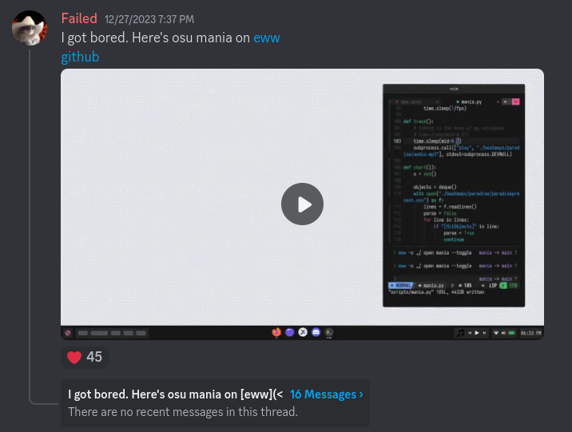
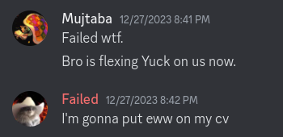
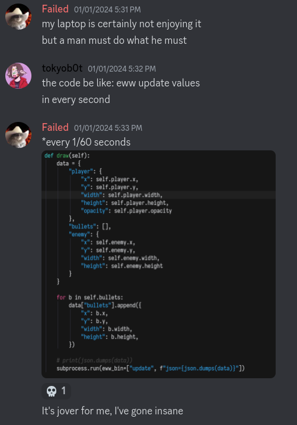
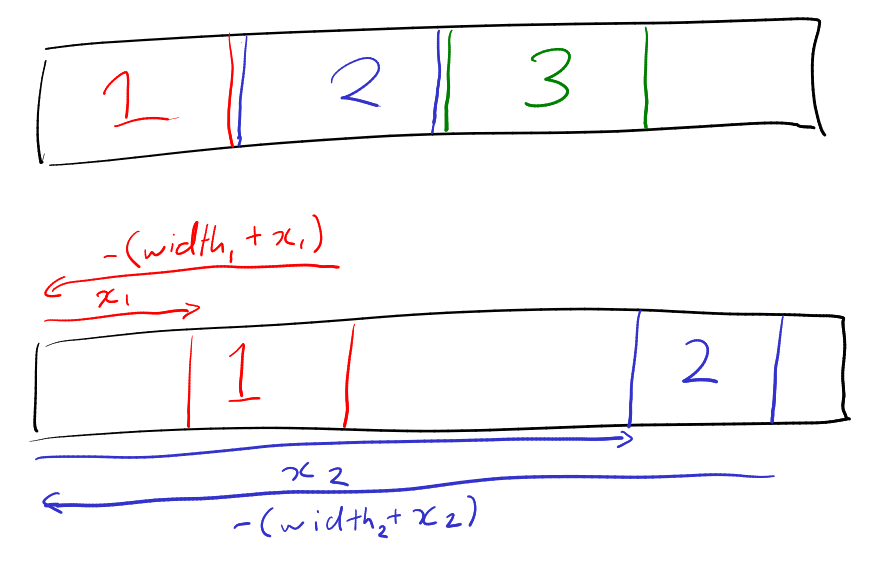
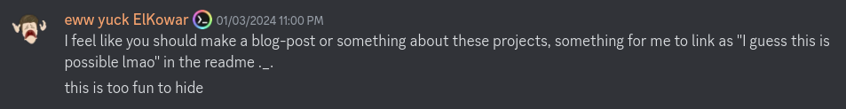
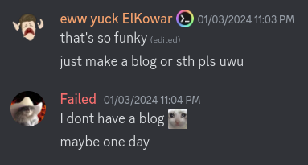

Doing things I shouldn't be doing on a widget system
22/5/2024
If you want to skip to the showcase section, click here.
What is eww?
Elkowar's wacky widget (eww) is a widget system written in rust that allows you to implement custom widgets in any window manager or compositor. Configuration of eww is done in yuck, a markup language that resembles lisp, and scss/css.
Before this widget system existed, desktop ricers only really had one viable option if they wanted to create widgets, that being awesomewm. Awesomewm is a powerful X11 window manager that has a widget system built in. The widget system is tied to the window manager, which makes it easy access and interact with information such as workspaces/tags and tiling mode. Eww however, uses GTK and is a standalone widget system (unlike awesome). This meant that it could run on any window manager or compositor, which is one of its main selling points.
The creation of eww meant that there were now 2 options in terms of widget systems to use. This gave birth to a small war between Awesomewm users and Eww users, both sides arguing over which widget system is better. I will bring this up again later.
Why?
It was around Christmas 2023 when I finally felt satisfied with the work I've done everything with eww. Around this time was when I had settled on a decent looking desktop with some widgets that I was fairly happy with. Although I was happy with my desktop, I was a bit disappointed that there wasn't anymore I could do with eww. Was this all eww had to offer? Have I finally reached the peak of this weird lisp like language?
With no widget ideas to implement, it was clear that I was very bored during this period of time, because 2 days after Christmas I started developing games on eww.
The first game project I made on eww was Osu Mania (4k), which was inspired by a post made by discord user abacus45:
Fueled by the war between Awesomewm and eww, I decided to push eww beyond what it was made to do and create Osu mania to prove that it was on par with what Awesomewm could do.
 People were impressed/terrified of what I've done, so I started making more game with eww out of boredom.
Yuck is not a programming language
Yuck is a markup language. You cannot program with it. It has some simple expressions that allow for calculations and comparisons, but you cannot program a game in it. It is a markup language.
What you could do however, is push the game code out of eww. Introducing deflisten, a feature that allows eww to run and listen to other scripts. By writing all the game logic in python, and printing out the game data in JSON for eww to display, we can avoid the dilemma of programming a game in a markup language. This is the key to using eww as a game engine, treating eww as a tool that simply displays things on the screen. Eww is very reactive, i.e., elements are instantly updated when variables are changed, so it does its job fairly well.
For this part of the project, I typically just use python and a handful of threads. Most games will involve printing data to stdout at 60hz (surprisingly, eww can keep up with this.)
How to place anything, anywhere
Hypothetically assume that you want to place a sprite with a specific width and height on a specific x and y coordinate in an eww box. How would you do it?
One could use transform, which allows for users to move and rotate elements. Unfortunately, this is not at all easy to use and acts unexpectedly most of the time. The easiest way to move an object is to abuse the css margin property.
This method was taken from T0kyoB0y's dotfiles where he made a workspace overview by using margins to set the boxes position and size.

By setting margin-top and margin-left to y and x respectively, you can move a box to your desired position. And by setting margin-bottom to -(y+height) and margin-left to -(x+width), you can set the size of the box.
Wait, were those negative margin values?
Yes. Those were negative margin values.
A game will often have multiple objects in the same box, which means you need to account for placing multiple boxes anywhere within a box. Eww likes to stack children of a box side by side within a box, which is slightly inconvenient in our case. By setting a negative margin for the bottom and right side, we trick eww into thinking our objects has a width and height of 0. This allows the next box to be placed relative to 0, 0.
(Take a look at my beautifully drawn diagram)
Remember to set space-evenly, hexpand and vexpand to false if you're attempting this.
What about rotating sprites?
Rotation is so fucked up that I will leave it as a separate blog topic.
Getting input
Possibly the hardest part of these project is getting user input and passing it to the python script. There are many ways to accomplish this, but I usually just get python to read a text file 1/60 times a second and change the text file when the user interacts with certain elements in eww (eww is capable of running shell commands). If a more accurate input method is required, I would get the python script to spawn pygame window, whose sole purpose is to listen for user input. In the next section, which is a mini showcase, you will see different input methods I have used over this journey.
Projects
Osu Mania
This project uses 4 sliders for each lane to display notes (it stacks more sliders if there are more notes). It also uses a input field, which writes to a text file every time the field is changed. The python file reads and parses the text file every 1/60 of a second. Unfortunately, using a text file does not support holding down keys, which is why there are no hold notes in this project.
Platformer
This project involves an eww window that covers the whole screen (in the background), the cube is then drawn somewhere on the transparent background. Using i3ipc, I was able to get the whereabouts and size of every window to use as platforms. The python script also spawns a pygame window, whose only responsibility is to capture input. Using pygame allows for users to hold down keys.
Bullet hell
One of my laggiest projects. It's actually shocking to see eww keep up with such a large quantity of entities. This uses the same input method as the previous project.
Flappy bird
The game screen is an eventbox that writes to a file every time it is clicked. The python file check for changes from the file every 1/60 seconds. The rest is fairly trivial.
Suika
Ball logic is significantly more painful to code than cube logic, but I won't elaborate on this. Each ball is a normal square box with a comically large border-radius value, which turns them into balls. There are 10 eventbox horizontally spread out among the screen, each one will write their index to a text file when it is being hovered above. When any of them detects a click, "drop" is written to the file, instructing the python script to drop the ball.
I'll stop here before programmers around the world start throwing up at the sight of the methods I have used. If you want to see more of these projects, check out the experiments section.
End
The idea to create this blog came when Elkowar, the creator of eww, suggested it after catching onto what I was doing.
 Sorry this blog took over 5 months Elkowar.
-Failed